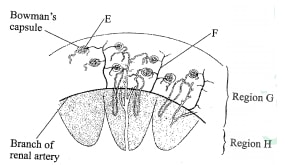
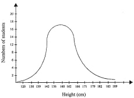
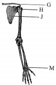
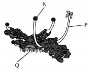
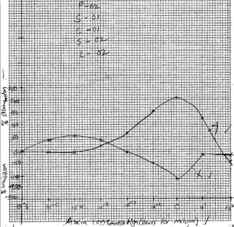
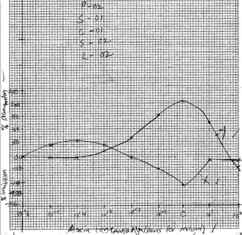

Answer all the questions in the spaces provided.
SECTION A (40 marks)
Answer all the questions in this section in the spaces provided.
1. The diagram below illustrates a section of the mammalian kidney.

(a) Name the structures labelled E and F. Region H (1 marks)
E ...........(1 marks)
F...........(1 marks)
(b) Explain the processes that take place in the regions labelled G and H. Region G(3 marks)
Region H(3 marks)
2. Below is a graphical representation of students’ height in a classroom.

(a) Name the type of curve illustrated.
(b) (i) State the type of variation represented by the curve.
(ii) State two meiotic processes that lead to variation among organisms. (2 marks)
(iii) Explain the role of variation in organisms.(2 marks)
(c) EKplain the need for genetic counselling in present day health facilities. (2 marks)
3.The amount of blood flowing through certain parts in the mammalian body at different activity levels was measured and results tabulated as shown in the table below.
(i) the high blood-flow through the cardiac and skeletal muscles during strenuous exercises. (4 marks)
(ii) the results obtained for the alimentary canal at rest. (2 marks)
(b) Name two waste materials excreted by both the skin and the kidneys. (2 marks)
4.The diagram below illustrates the arrangement of bones in a human arm.

(a) Name:
(i) G
the type of joints formed at points H and M.
H (1 mark)
M (1 mark)
(ii) bone G (I mark)
(b) Name bone J and state how it is adapted to its functions. Name: (1 mark)
Adaptation (3 marks)
(c) State one functional difference between a tendon and a ligament. ( I mark)
5. The photograph below represents a plant in a certain Division. 
(a) (i) Name the Division to which the plant belongs.(1 marks)
(ii) With reference to the photograph, state three observable features of the Division named in a(i) above. (3 marks)
(b) Name the parts labelled N and P.
N............(1 marks)
P............(1 marks)
(c) Explain how the part labelled Q is adapted to its functions.(2 marks)
SECTION B (40 marks)
Answer question 6 (compulsory) and either questfOn 7 or 8 in the spaces provided after question 8.
6. The effect of auxin concentration on growth response of two parts of a plant, X and Y was investigated over a period of time. The results were tabulated as shown in the table below.
(a) On the same axis, draw line graphs of the effect on growth of the two parts, X and Y (percentage inhibition or stimulation) against the concentration. (8 marks)
(b) With reasons, name the two parts of the plant, X and Y. X..............(1 marks)
Reason.............(1 marks)
Y.......................(1 marks)
Reason.....................(1 marks)
(c) From the graph identify: (i) the point at which the percentage stimulation was the same for both X and Y. (1 marks)
(ii) the optimum concentration of auxins required for part Y (1 marks)
(d) State three ways in which the effects of auxins on plants is applied in flower farming.(3 marks)
(e) Distinguish between simple and conditioned reflex action (3 marks)
7. (a) Describe the mode of reproduction in a named fungus.(5 marks)
(b) Describe the role of hormones in the human menstrual cycle. (15 marks)
8. Describe what happens to a meal rich in proteins along the alimentary canal from ingestion to egestion. (20 marks)
E Glomerulus;
F Artery/branch of renal artery
At the (glomerulus), the afferent arteriole which brings blood to the glomerulus is wider than the efferent arteriole; this creates high pressure; leading to ultrafiltration;
At the proximal convoluted tubule /dista1 convoluted tubule, substances required by the body/amino acid substances required by the body (amino acids/glucose/vitamins/ some water; are selectively re-absorbed (into the blood stream); hence selective reabsorption
At the descending arm or/limb of the Loop of Henle, water is selectively reabsorbed; At the ascending arm/limb of the Loop of Henle, sodium ions/salts are actively/selectively reabsorbed; At the collecting duct, water is (selectively) reabsorbed:
2.
(a)
Normal distribution curve
(b) (i)
Continuous (variation);
(ii)
Independent assortment; Crossing over;
(iii)
Organisms/individuals with advantageous traits/variations are favoured/selected by nature; and survive to reproduce/pass on/propagate the advantageous/favourable traits to their off-spring
(c) Explain the need for genetic counselling in present day health facilities. (2 marks)
Variation ensures propagation of desirable/favourable traits; to the future generations/off-spring, ensuring improved/quality population
3.
(a) Account for:
During strenuous exercises, the heart beat/pulse rate is increased (more contraction/relaxation of cardiac muscles);
while the rate of contraction and Telaxation of skeletal muscles is increased;
hence more blood flows to supply more oxygen/nutrients; and for removal of metabolic waste products (carbon (IV) oxide/urea);
At rest, more blood flows through the alimentary canal/gut/gastral intestinal tract (since digestion is at optimum at rest); to transport digested/absorbed food materials/eliminate metabolic wastes;
Urea; Water; Salts;
(i) The type of joints formed at points H and M.
H Ball and socket (joint); (1 mark)
M Gliding/planar/p1ane (joint) (1 mark)
ii. Clavicle
- Scapula;
Has a spine to increase surface area for muscle attachment; I-t is broad/flat to increase the surface area for muscle attachment; Forms flexible attachment above the ribs that allows movement of the arms; Has a glenoid cavity/depression for articulation wlth the humerus/forming the ball and socket joint; Has acromion for articulation with clavicle/for muscle attachment; Has coracoid process to increase surface area for muscle attachment
Ligaments hold the bones together (at a joint) while tendons attach muscles to bones;
5. The photograph below represents a plant in a certain Division.
Bryophyta
Has capsules (for enclosing spores); Has (long) setae (for supporting the capsules/for effective propagation of spores); (Developed) rhizoids (for anchorage/absorption of water/mineral salts); Thalloid in nature/Thallus/undifferentiated; (b) Name the parts labelled N and P. N = Capsule(1 marks) P = Seta(1 marks) (c) Explain how the part labelled Q is adapted to its functions.(2 marks) Numerous/hair-like to increase the surface area for absorption;/to enhance rate of absorption of water/nutrients/dissolved mineral salts; Numerous/hair-like to hold firmly on the surface/not to be easily blown away/displaced/anchorage SECTION B (40 marks) Answer question 6 (compulsory) and either questfOn 7 or 8 in the spaces provided after question 8. 6. (a) On the same axis, draw line graphs of the effect on growth of the two parts, X and Y (percentage inhibition or stimulation) against the concentration. (8 marks)  (b) With reasons, name the two parts of the plant, X and Y. XRoot Reason Low auxin Concentration stimulates(rapid/faster)cell division and elongation/growth in roots High Concentration of auxins inhibits growth in roots Y Shoot Reason Low auxins concentration has little effect on the growth of shoots/shoots are stimulated to grow with high auxin concentration (upto given optimum) (c) From the graph identify: (i) the point at which the percentage stimulation was the same for both X and Y. (1 marks) 33% ± 2 (ii) the optimum concentration of auxins required for part Y (1 marks) 1.0 parts per million (d) State three ways in which the effects of auxins on plants is applied in flower farming.(3 marks) Faster maturity of flowers/earlier flower formation/flowering; Prunning/decapitating shoOt tlps to allow sprouting of lateral buds, hence more yield; Keeping flowers fresh; Stimulate formation/development of(adventitious) roots; (e) Distinguish between simple and conditioned reflex action (3 marks) Simple reflex action Conditioned reflex action Is not learned (over time)/is inborn Is learned (over time); Primarystimulus involved Secondary stimulus involved Impulsefollows appropriate sensory and motor neurone/sensory and motor components arethe same all the time; Impulse follows inappropriate sensory but appropriate motor neurone Single stimulus brings about the desired response Repeated stimulus needed to bring about a response 7. (a) Describe the mode of reproduction in a named fungus.(5 marks) Rhizopus/mucor/mould; reproduce asexually; by sporulation; spores develop from a single cell forming sporangium; which bursts on maturity releasing spores; which are dispersed by air currents/wind germinating; to form new generation/ form a mycelium (if it lands on a suitable medium); Or Yeast/Saccharomyces/Schizosaccharomyces; reproduce asexual1y;by budding; parent cell forms an outgrowth/projection/bud; this is followed by division of the nucleus into two; one of the nuclei moves into the bud; which grows and develops into a new cell; (b) Describe the role of hormones in the human menstrual cycle. (15 marks) After/at the onset of menstruation, (the anterior lobe of) the pituitary gland; secretes follicle stimulating hormone (FSH); the FSH causes the Graafian follicle; to develop into the ovary; and stimulate the OVary tlssues to secrete oestrogen hormone; Oestrogen brings about repair/healing of the endometrium/uterine wall; its concentration increases to a level which stimulates the (anterior) pituitary gland; to secrete lutenizing hormone (L.H.) and stops fiirther secretion of FSH; The L.H. stimulates the maturation of the Graafian follicle; LH also stimulates the Graafian follicle to release an ovum into the (funnel of the) fallopian tube/causes ovulation; it also stimulates the remains of the Graafian follicle to form a yellow body/corpus luteum (in the ovary; The corpus luteum is stimulated by the L.H. to produce progesterone; Progesterone then stimulates the thickening of the endometrium/inner lining of the uterine wall; in readiness for implantation; as progesterone level increases, it inhibits (the pituitary gland) from secreting FSH; further increase in progesterone level inhibits the pituitary gland from secreting L.H. This causes the corpus Luteum to degenerate; this reduces the amount of progesterone; the sudden drop in secretion of progesterone causes the endometrium to slough off/menstruation occurs; and the cycle is repeated 8. Describe what happens to a meal rich in proteins along the alimentary canal from ingestion to egestion. (20 marks) The meal is ingested through the mouth; (In the mouth), it is chewed/masttcated (by teeth); to reduce/break it into smaller particles; mixed with saliva (from salivary gland); The food is then rolled (by the tongue) into boluses; and pushed down/ into the oesophaghus/swallowed; The boluses move by peristalsis (into the stomach); Constant contractions/relaxations of the stomach walls mix the food, (giving rise to chime); Presence of food in the stomach further stimulates production of gastric juice; which contains pepsinogen; and rennin/chymosln; Pepsinogen is activated to pepsin; by hydrochloric acid; (contained in the gastric juice). Pepsin breaks down proteins to peptides; Rennin converts/coagulates the protein, caseinogen; in milk to casein; (which is abundant in young children). It is then pushed into the duodenum (through the pyloric sphincter): Pancreatic juice in the duodenum contains trypsin; which digests proteins into peptides; (secreted in an inactive form, trypsinogen) In the ileum, intestinal juice/succus antericus iz secreted; It contains peptidase enzymes; which breaks down polypeptides into amino acids; It also contains polypeptidase enzyme; which breaks down peptides to amino acids, completing the process of digestion of the proteins; The amino acids are absorbed into the bloodstream/pass through the epithelia of the villi, and the capillary walls into the blood-stream; by active transport; The undigested/indigestible proteins/food substances pass through to the colon/large intestlnes; where water is absorbed; leaving a semi-solid waste material being passed on to the rectum; then out through the anus (as faeces);
N = Capsule(1 marks)
P = Seta(1 marks)
Numerous/hair-like to increase the surface area for absorption;/to enhance rate of absorption of water/nutrients/dissolved mineral salts; Numerous/hair-like to hold firmly on the surface/not to be easily blown away/displaced/anchorage
6.

(b) With reasons, name the two parts of the plant, X and Y. XRoot
Reason
Low auxin Concentration stimulates(rapid/faster)cell division and elongation/growth in roots High Concentration of auxins inhibits growth in roots
Y Shoot
Low auxins concentration has little effect on the growth of shoots/shoots are stimulated to grow with high auxin concentration (upto given optimum)
(c) From the graph identify:
(i) the point at which the percentage stimulation was the same for both X and Y. (1 marks)
33% ± 2
1.0 parts per million
Faster maturity of flowers/earlier flower formation/flowering; Prunning/decapitating shoOt tlps to allow sprouting of lateral buds, hence more yield; Keeping flowers fresh; Stimulate formation/development of(adventitious) roots;
Rhizopus/mucor/mould; reproduce asexually; by sporulation; spores develop from a single cell forming sporangium; which bursts on maturity releasing spores; which are dispersed by air currents/wind germinating; to form new generation/ form a mycelium (if it lands on a suitable medium); Or Yeast/Saccharomyces/Schizosaccharomyces; reproduce asexual1y;by budding; parent cell forms an outgrowth/projection/bud; this is followed by division of the nucleus into two; one of the nuclei moves into the bud; which grows and develops into a new cell;
After/at the onset of menstruation, (the anterior lobe of) the pituitary gland; secretes follicle stimulating hormone (FSH); the FSH causes the Graafian follicle; to develop into the ovary; and stimulate the OVary tlssues to secrete oestrogen hormone; Oestrogen brings about repair/healing of the endometrium/uterine wall; its concentration increases to a level which stimulates the (anterior) pituitary gland; to secrete lutenizing hormone (L.H.) and stops fiirther secretion of FSH; The L.H. stimulates the maturation of the Graafian follicle; LH also stimulates the Graafian follicle to release an ovum into the (funnel of the) fallopian tube/causes ovulation; it also stimulates the remains of the Graafian follicle to form a yellow body/corpus luteum (in the ovary; The corpus luteum is stimulated by the L.H. to produce progesterone; Progesterone then stimulates the thickening of the endometrium/inner lining of the uterine wall; in readiness for implantation; as progesterone level increases, it inhibits (the pituitary gland) from secreting FSH; further increase in progesterone level inhibits the pituitary gland from secreting L.H. This causes the corpus Luteum to degenerate; this reduces the amount of progesterone; the sudden drop in secretion of progesterone causes the endometrium to slough off/menstruation occurs; and the cycle is repeated
The meal is ingested through the mouth; (In the mouth), it is chewed/masttcated (by teeth); to reduce/break it into smaller particles; mixed with saliva (from salivary gland); The food is then rolled (by the tongue) into boluses; and pushed down/ into the oesophaghus/swallowed; The boluses move by peristalsis (into the stomach); Constant contractions/relaxations of the stomach walls mix the food, (giving rise to chime); Presence of food in the stomach further stimulates production of gastric juice; which contains pepsinogen; and rennin/chymosln; Pepsinogen is activated to pepsin; by hydrochloric acid; (contained in the gastric juice). Pepsin breaks down proteins to peptides; Rennin converts/coagulates the protein, caseinogen; in milk to casein; (which is abundant in young children). It is then pushed into the duodenum (through the pyloric sphincter): Pancreatic juice in the duodenum contains trypsin; which digests proteins into peptides; (secreted in an inactive form, trypsinogen) In the ileum, intestinal juice/succus antericus iz secreted; It contains peptidase enzymes; which breaks down polypeptides into amino acids; It also contains polypeptidase enzyme; which breaks down peptides to amino acids, completing the process of digestion of the proteins; The amino acids are absorbed into the bloodstream/pass through the epithelia of the villi, and the capillary walls into the blood-stream; by active transport; The undigested/indigestible proteins/food substances pass through to the colon/large intestlnes; where water is absorbed; leaving a semi-solid waste material being passed on to the rectum; then out through the anus (as faeces);